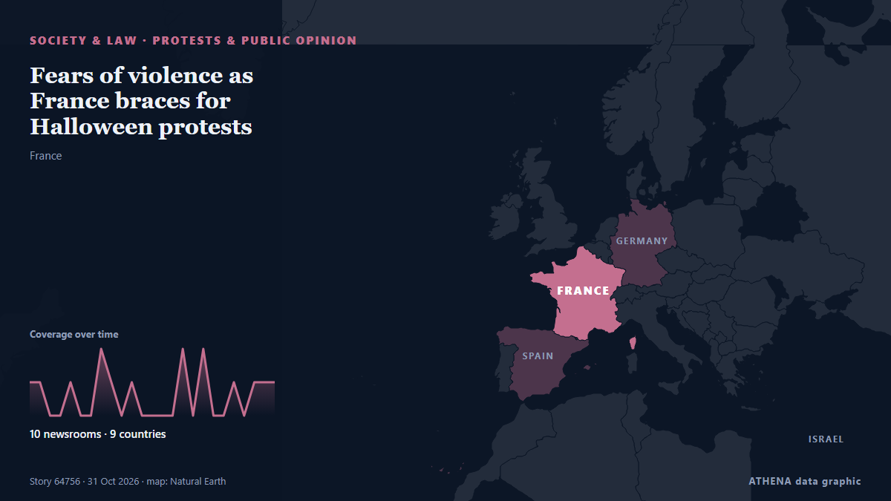

Протесты и общественное мнение
| 18 окт. | 0 |
|---|---|
| 19 окт. | 1 |
| 20 окт. | 0 |
| 21 окт. | 1 |
| 22 окт. | 1 |
| 23 окт. | 3 |
| 24 окт. | 1 |
| 25 окт. | 0 |
| 26 окт. | 6 |
| 27 окт. | 2 |
| 28 окт. | 3 |
| 29 окт. | 0 |
| 30 окт. | 5 |
| 31 окт. | 0 |
Заголовки приводятся на английском языке, как они были опубликованы.

Fears of violence as France braces for Halloween protests
France on Saturday braced for a third weekend of protests coinciding with Halloween, as shops boarded up and authorities scrambled to prevent a repeat of the street violence that swept the country… из The Local France
Macron braces France for another 'high-risk' Saturday of protests
Macron signals 'significant announcements and progress aimed at bringing about changes' из Anadolu Agency (English)
French interior minister to deploy 70,000 police for Halloween protests
PARIS, Oct 29 - French Interior Minister Laurent Nunez said that this Saturday was looking like \"a very high risk\" day for public order and that he would again deploy 70,000 security forces to try… из The Straits Times
France's Yellow Vest movement calls new protests for October 31st
France's Yellow Vest movement, which has helped organise protests rocking the country, called Saturday for new demonstrations on October 31. из The Local France
Protesters storm Serbian pro-Vucic TV station after his loss at polls
President Vucic called the incident an attack on free speech and the freedom of journalism. из Al Jazeera English
French Senate Passes Bill to Make Protesters Pay for Unrest Damage
However critics warned the move could curb the right to protest. из The Straits Times
Anti-mega dam protest rocks Arunachal capital
The protestors in Itanagar want the Siang Upper Multipurpose Project plan scrapped and arrested activists released. из The Hindu
Serbia’s ‘students’ celebrate for a second night after election victory
Thousands gathered on the streets of Belgrade for a second night to celebrate the student-led movement's victory. из Al Jazeera English
Albania opposition disrupts parliament session after violent street protests
TIRANA, Oct 29 - Opposition lawmakers in Albania disrupted a parliament session by letting off flares on Thursday following weeks of violent anti-government protests called by students demanding the… из The Straits Times
Employers must prioritise locals before hiring foreign workers, says Ramanan
Employers must use MyFutureJobs portal to seek local candidates first. из Malaysiakini
The Long March, told through what remains
A village's story of change: From the Long March to today. из CGTN (China)
Hundreds protest in Tel Aviv, Jerusalem and Haifa, call for Jewish-Arab government
Demonstrators gathered to demand Jewish-Arab cooperation as the opposition has won 67 seats, including 19 held by Arab parties, leaving Eisenkot's bloc short of a majority without Arab support. из Haaretz (English)
Police made 1,314 arrests in France's protests: government
Over 1,300 arrests were made across France during protests against high living costs, with reports of violence and injuries among police officers. из Arab News
Italian PM slams 'shameful' release of alleged protest organiser
Italian Prime Minister Giorgia Meloni on Wednesday slammed as "shameful" the decision by a judge to dismiss accusations against a campaigner arrested on terrorism charges for allegedly seeking to… из The Local Italy
Portugal housing protests continue after police clear camps
Demonstrators vow to continue their campaign to call for affordable housing in Portugal after police cleared tent camps and arrested at least 55 people. из DW English
Istanbul Bar Association elects new president
Lawyers at the Istanbul Bar Association, one of the world’s largest bar associations, cast their ballots on Oct. из Hürriyet Daily News
Israeli forces kill man with disability in southern Syria, authorities say
Israeli forces deploy snipers on rooftops, raid houses in Jamlah village in western Daraa. из Anadolu Agency (English)
More than 400,000 protest across France, challenging Macron as Paris clashes erupt
Clashes erupted in Paris as a mass march drew to a close Saturday, with more than 400,000 people rallying across France over school funding and soaring living costs in a fresh challenge to President… из PBS NewsHour
Palestinian activist Mahmoud Khalil returns to Columbia after US detention
Pro-Palestinian activist Mahmoud Khalil returned to Columbia University for the first time since his US detention. из Al Jazeera English